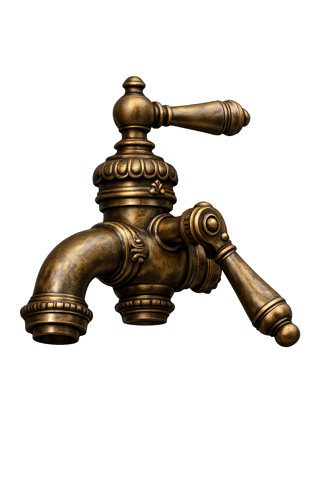
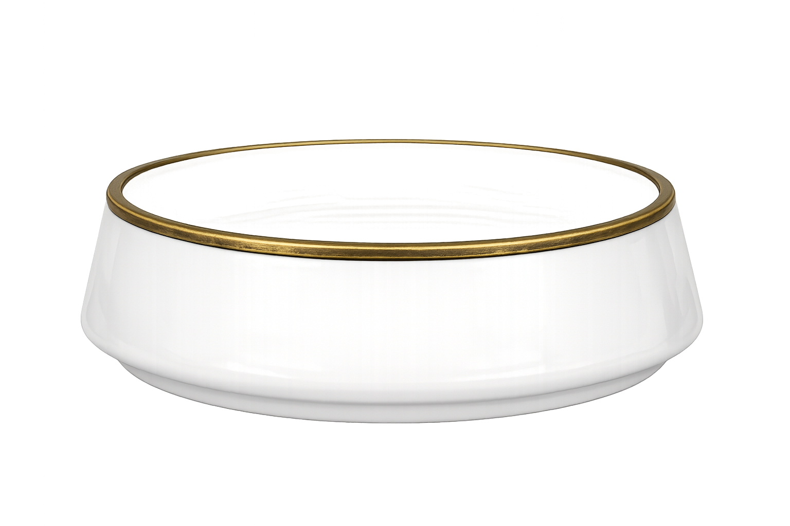

Água — H₂O
Massa molar: 18 g/mol
Densidade: 1,0 g/mL
m = n × Md = m/V

Bentinho
1,5 mol de H₂O


Volume colocado: 0 mL
Pitu
2,0 mol de H₂O

Volume colocado: 0 mL
Chico
2,5 mol de H₂O

Volume colocado: 0 mL
Porções Preparadas!
Você calculou a massa e o volume de água necessários para os três gatos. A próxima passagem da Torre de Química foi aberta.
Avançar →